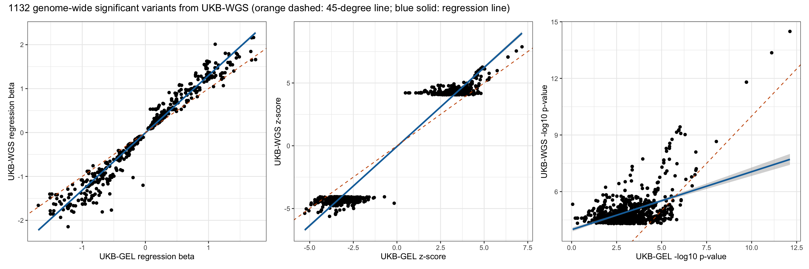
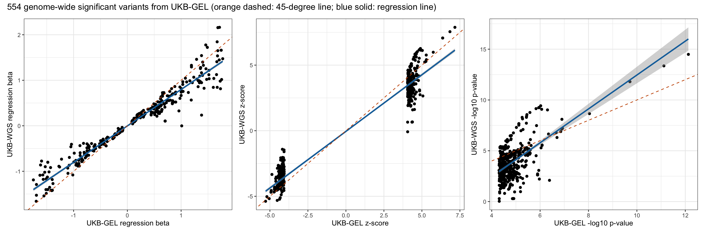
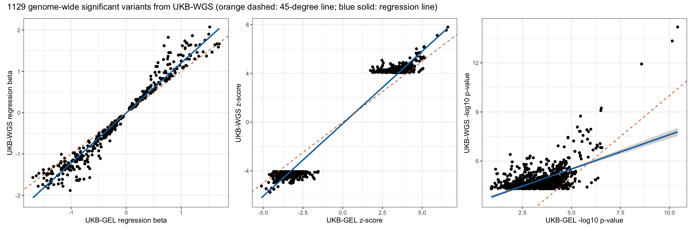
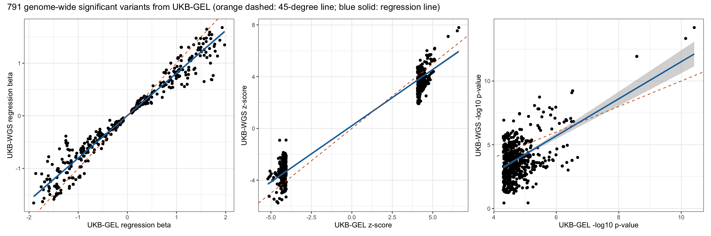

Last updated: 2025-07-27
Checks: 7 0
Knit directory: scratch/
This reproducible R Markdown analysis was created with workflowr (version 1.7.1). The Checks tab describes the reproducibility checks that were applied when the results were created. The Past versions tab lists the development history.
Great! Since the R Markdown file has been committed to the Git repository, you know the exact version of the code that produced these results.
Great job! The global environment was empty. Objects defined in the global environment can affect the analysis in your R Markdown file in unknown ways. For reproduciblity it’s best to always run the code in an empty environment.
The command set.seed(20250402) was run prior to running
the code in the R Markdown file. Setting a seed ensures that any results
that rely on randomness, e.g. subsampling or permutations, are
reproducible.
Great job! Recording the operating system, R version, and package versions is critical for reproducibility.
Nice! There were no cached chunks for this analysis, so you can be confident that you successfully produced the results during this run.
Great job! Using relative paths to the files within your workflowr project makes it easier to run your code on other machines.
Great! You are using Git for version control. Tracking code development and connecting the code version to the results is critical for reproducibility.
The results in this page were generated with repository version 802b439. See the Past versions tab to see a history of the changes made to the R Markdown and HTML files.
Note that you need to be careful to ensure that all relevant files for
the analysis have been committed to Git prior to generating the results
(you can use wflow_publish or
wflow_git_commit). workflowr only checks the R Markdown
file, but you know if there are other scripts or data files that it
depends on. Below is the status of the Git repository when the results
were generated:
Ignored files:
Ignored: .DS_Store
Ignored: .Rhistory
Ignored: .Rproj.user/
Note that any generated files, e.g. HTML, png, CSS, etc., are not included in this status report because it is ok for generated content to have uncommitted changes.
These are the previous versions of the repository in which changes were
made to the R Markdown
(analysis/compare_wgs_with_gel_b09_rep.Rmd) and HTML
(docs/compare_wgs_with_gel_b09_rep.html) files. If you’ve
configured a remote Git repository (see ?wflow_git_remote),
click on the hyperlinks in the table below to view the files as they
were in that past version.
| File | Version | Author | Date | Message |
|---|---|---|---|---|
| Rmd | 802b439 | Xiang Zhu | 2025-07-27 | compare wgs-based xiangzhu/brain2gene#14 with gel-based xiangzhu/brain2gene#2 results in replication xiangzhu/brain2gene#7 |
Number of rows in the new data frame: 21587743 Number of rows in the old data frame: 16624696 Number of genome-wide significant variants in the new GWAS: 32 Number of genome-wide significant variants in the old GWAS: 5 Number of GWAS loci in the new GWAS: 3 Number of GWAS loci in the old GWAS: 1 Relaxed genome-wide significant threshold: 4.30103 Total number of rows after joining two data frames: 16407248 Pearson correlation between new_A1FREQ in new and old_A1FREQ in old:
Estimate = 0.99989338 , 95% CI = [ 0.99989328 , 0.99989349 ]
Regression coefficients for new_A1FREQ (new ~ old):
Estimate Std. Error t value Pr(>|t|)
(Intercept) 3.188678e-05 9.864718e-07 32.32407 3.265669e-229
x 9.998070e-01 3.604647e-06 277366.10248 0.000000e+00
Pearson correlation between new_BETA in new and old_BETA in old:
Estimate = 0.76573851 , 95% CI = [ 0.76553828 , 0.76593858 ]
Regression coefficients for new_BETA (new ~ old):
Estimate Std. Error t value Pr(>|t|)
(Intercept) -2.385775e-05 2.942828e-05 -0.8107083 0.4175332
x 7.909807e-01 1.640141e-04 4822.6382438 0.0000000
Pearson correlation between new_SE in new and old_SE in old:
Estimate = 0.99364755 , 95% CI = [ 0.99364142 , 0.99365367 ]
Regression coefficients for new_SE (new ~ old):
Estimate Std. Error t value Pr(>|t|)
(Intercept) 0.001458911 5.147472e-06 283.4228 0
x 1.004079468 2.807454e-05 35764.7656 0
Pearson correlation between new_CHISQ in new and old_CHISQ in old:
Estimate = 0.61319286 , 95% CI = [ 0.61289084 , 0.6134947 ]
Regression coefficients for new_CHISQ (new ~ old):
Estimate Std. Error t value Pr(>|t|)
(Intercept) 0.3871977 0.0003399597 1138.952 0
x 0.6412790 0.0002039494 3144.304 0
Pearson correlation between new_LOG10P in new and old_LOG10P in old:
Estimate = 0.6050562 , 95% CI = [ 0.60474938 , 0.60536284 ]
Regression coefficients for new_LOG10P (new ~ old):
Estimate Std. Error t value Pr(>|t|)
(Intercept) 0.1705445 0.0001215713 1402.836 0
x 0.6267634 0.0002036118 3078.228 0
Pearson correlation between new_ZSCORE in new and old_ZSCORE in old:
Estimate = 0.78202397 , 95% CI = [ 0.78183595 , 0.78221186 ]
Regression coefficients for new_ZSCORE (new ~ old):
Estimate Std. Error t value Pr(>|t|)
(Intercept) 0.0005151238 0.0001542559 3.339412 0.0008395619
x 0.7987152868 0.0001571503 5082.492855 0.0000000000Pearson correlation between new_A1FREQ in new and old_A1FREQ in old:
Estimate = 0.99998837 , 95% CI = [ 0.99998693 , 0.99998965 ]
Regression coefficients for new_A1FREQ (new ~ old):
Estimate Std. Error t value Pr(>|t|)
(Intercept) 9.465724e-06 3.643856e-05 0.2597722 0.7950868
x 9.985989e-01 1.432594e-04 6970.5654084 0.0000000
Pearson correlation between new_BETA in new and old_BETA in old:
Estimate = 0.9785496 , 95% CI = [ 0.97592727 , 0.98088903 ]
Regression coefficients for new_BETA (new ~ old):
Estimate Std. Error t value Pr(>|t|)
(Intercept) -0.00778592 0.004503865 -1.72872 0.08413241
x 1.30625430 0.008180820 159.67278 0.00000000
Pearson correlation between new_SE in new and old_SE in old:
Estimate = 0.99523288 , 95% CI = [ 0.99464457 , 0.99575669 ]
Regression coefficients for new_SE (new ~ old):
Estimate Std. Error t value Pr(>|t|)
(Intercept) 0.0008541748 0.0004912473 1.738788 0.08234448
x 1.0063242872 0.0029335872 343.035409 0.00000000
Pearson correlation between new_CHISQ in new and old_CHISQ in old:
Estimate = 0.50058439 , 95% CI = [ 0.45560777 , 0.54301173 ]
Regression coefficients for new_CHISQ (new ~ old):
Estimate Std. Error t value Pr(>|t|)
(Intercept) 15.529517 0.21608034 71.86918 0.000000e+00
x 0.326109 0.01677674 19.43816 7.814865e-73
Pearson correlation between new_LOG10P in new and old_LOG10P in old:
Estimate = 0.49024154 , 95% CI = [ 0.44467817 , 0.53327425 ]
Regression coefficients for new_LOG10P (new ~ old):
Estimate Std. Error t value Pr(>|t|)
(Intercept) 3.9819287 0.05550182 71.74412 0.000000e+00
x 0.3071918 0.01624691 18.90770 1.716392e-69
Pearson correlation between new_ZSCORE in new and old_ZSCORE in old:
Estimate = 0.9731714 , 95% CI = [ 0.96990159 , 0.9760903 ]
Regression coefficients for new_ZSCORE (new ~ old):
Estimate Std. Error t value Pr(>|t|)
(Intercept) -0.05956221 0.030043172 -1.982554 0.04765916
x 1.25884389 0.008853699 142.182825 0.00000000Pearson correlation between new_A1FREQ in new and old_A1FREQ in old:
Estimate = 0.99826629 , 95% CI = [ 0.99795151 , 0.99853273 ]
Regression coefficients for new_A1FREQ (new ~ old):
Estimate Std. Error t value Pr(>|t|)
(Intercept) 0.0006233475 0.0006487623 0.9608257 0.3370605
x 0.9976261687 0.0025036140 398.4744356 0.0000000
Pearson correlation between new_BETA in new and old_BETA in old:
Estimate = 0.96760128 , 95% CI = [ 0.96182528 , 0.97251559 ]
Regression coefficients for new_BETA (new ~ old):
Estimate Std. Error t value Pr(>|t|)
(Intercept) -0.002848878 0.006576626 -0.4331823 0.6650515
x 0.800536478 0.008890939 90.0395898 0.0000000
Pearson correlation between new_SE in new and old_SE in old:
Estimate = 0.99177544 , 95% CI = [ 0.9902879 , 0.99303594 ]
Regression coefficients for new_SE (new ~ old):
Estimate Std. Error t value Pr(>|t|)
(Intercept) 0.001109802 0.0009556173 1.161346 0.2460031
x 1.004892939 0.0055196740 182.056574 0.0000000
Pearson correlation between new_CHISQ in new and old_CHISQ in old:
Estimate = 0.67107002 , 95% CI = [ 0.62256954 , 0.71443497 ]
Regression coefficients for new_CHISQ (new ~ old):
Estimate Std. Error t value Pr(>|t|)
(Intercept) -16.540869 1.49608050 -11.05614 8.333330e-26
x 1.655046 0.07782545 21.26612 9.335387e-74
Pearson correlation between new_LOG10P in new and old_LOG10P in old:
Estimate = 0.66269101 , 95% CI = [ 0.613241 , 0.70696691 ]
Regression coefficients for new_LOG10P (new ~ old):
Estimate Std. Error t value Pr(>|t|)
(Intercept) -4.217108 0.39495909 -10.67733 2.544883e-24
x 1.667246 0.08019342 20.79031 2.444328e-71
Pearson correlation between new_ZSCORE in new and old_ZSCORE in old:
Estimate = 0.97518148 , 95% CI = [ 0.97073676 , 0.9789583 ]
Regression coefficients for new_ZSCORE (new ~ old):
Estimate Std. Error t value Pr(>|t|)
(Intercept) -0.0521898 0.036336333 -1.436298 0.151484
x 0.8634061 0.008343564 103.481691 0.000000 UKB-WGS p < 5e-8 UKB-WGS p >= 5e-8
UKB-GEL p < 5e-8 210 344
UKB-GEL p >= 5e-8 922 16405772
Fisher's Exact Test for Count Data
data: contingency_table
p-value < 2.2e-16
alternative hypothesis: true odds ratio is not equal to 1
95 percent confidence interval:
8402.051 16384.000
sample estimates:
odds ratio
13192.02 
Number of rows in the new data frame: 21739136 Number of rows in the old data frame: 16730668 Number of genome-wide significant variants in the new GWAS: 24 Number of genome-wide significant variants in the old GWAS: 4 Number of GWAS loci in the new GWAS: 3 Number of GWAS loci in the old GWAS: 1 Relaxed genome-wide significant threshold: 4.30103 Total number of rows after joining two data frames: 16509264 Pearson correlation between new_A1FREQ in new and old_A1FREQ in old:
Estimate = 0.99989238 , 95% CI = [ 0.99989228 , 0.99989248 ]
Regression coefficients for new_A1FREQ (new ~ old):
Estimate Std. Error t value Pr(>|t|)
(Intercept) 3.215339e-05 9.852687e-07 32.63413 1.369164e-233
x 9.998002e-01 3.610329e-06 276927.74237 0.000000e+00
Pearson correlation between new_BETA in new and old_BETA in old:
Estimate = 0.78754688 , 95% CI = [ 0.78736362 , 0.78773 ]
Regression coefficients for new_BETA (new ~ old):
Estimate Std. Error t value Pr(>|t|)
(Intercept) 8.806217e-05 2.826973e-05 3.11507 0.001839018
x 7.971090e-01 1.535104e-04 5192.54138 0.000000000
Pearson correlation between new_SE in new and old_SE in old:
Estimate = 0.99367094 , 95% CI = [ 0.99366485 , 0.99367702 ]
Regression coefficients for new_SE (new ~ old):
Estimate Std. Error t value Pr(>|t|)
(Intercept) 0.001404652 5.143515e-06 273.0918 0
x 0.986437103 2.744475e-05 35942.6465 0
Pearson correlation between new_CHISQ in new and old_CHISQ in old:
Estimate = 0.65059778 , 95% CI = [ 0.65031949 , 0.65087588 ]
Regression coefficients for new_CHISQ (new ~ old):
Estimate Std. Error t value Pr(>|t|)
(Intercept) 0.3492986 0.0003258203 1072.059 0
x 0.6727207 0.0001932599 3480.911 0
Pearson correlation between new_LOG10P in new and old_LOG10P in old:
Estimate = 0.64228355 , 95% CI = [ 0.64200008 , 0.64256685 ]
Regression coefficients for new_LOG10P (new ~ old):
Estimate Std. Error t value Pr(>|t|)
(Intercept) 0.1546239 0.0001165227 1326.985 0
x 0.6591792 0.0001936005 3404.843 0
Pearson correlation between new_ZSCORE in new and old_ZSCORE in old:
Estimate = 0.80453286 , 95% CI = [ 0.80436265 , 0.80470294 ]
Regression coefficients for new_ZSCORE (new ~ old):
Estimate Std. Error t value Pr(>|t|)
(Intercept) 0.0007535872 0.0001464496 5.145709 2.665151e-07
x 0.8171921914 0.0001484690 5504.125732 0.000000e+00Pearson correlation between new_A1FREQ in new and old_A1FREQ in old:
Estimate = 0.9999824 , 95% CI = [ 0.99998022 , 0.99998434 ]
Regression coefficients for new_A1FREQ (new ~ old):
Estimate Std. Error t value Pr(>|t|)
(Intercept) 0.0001451608 5.879985e-05 2.468727 0.01370695
x 1.0009159755 1.768866e-04 5658.519221 0.00000000
Pearson correlation between new_BETA in new and old_BETA in old:
Estimate = 0.98259791 , 95% CI = [ 0.9804626 , 0.98450167 ]
Regression coefficients for new_BETA (new ~ old):
Estimate Std. Error t value Pr(>|t|)
(Intercept) -0.007597521 0.003910030 -1.943085 0.05225463
x 1.210215806 0.006814642 177.590529 0.00000000
Pearson correlation between new_SE in new and old_SE in old:
Estimate = 0.99455726 , 95% CI = [ 0.99388489 , 0.99515588 ]
Regression coefficients for new_SE (new ~ old):
Estimate Std. Error t value Pr(>|t|)
(Intercept) 0.001915383 0.0005062833 3.783225 0.0001629472
x 0.975377301 0.0030437775 320.449609 0.0000000000
Pearson correlation between new_CHISQ in new and old_CHISQ in old:
Estimate = 0.58050069 , 95% CI = [ 0.54046247 , 0.61791574 ]
Regression coefficients for new_CHISQ (new ~ old):
Estimate Std. Error t value Pr(>|t|)
(Intercept) 13.317293 0.25709048 51.80002 2.209009e-300
x 0.437729 0.01828957 23.93325 1.099491e-102
Pearson correlation between new_LOG10P in new and old_LOG10P in old:
Estimate = 0.57307018 , 95% CI = [ 0.53253252 , 0.61098483 ]
Regression coefficients for new_LOG10P (new ~ old):
Estimate Std. Error t value Pr(>|t|)
(Intercept) 3.4205506 0.06628699 51.60214 4.596671e-299
x 0.4187114 0.01783599 23.47564 1.549982e-99
Pearson correlation between new_ZSCORE in new and old_ZSCORE in old:
Estimate = 0.9883117 , 95% CI = [ 0.98687286 , 0.98959366 ]
Regression coefficients for new_ZSCORE (new ~ old):
Estimate Std. Error t value Pr(>|t|)
(Intercept) -0.1372892 0.019898158 -6.899591 8.680323e-12
x 1.1895177 0.005465538 217.639630 0.000000e+00Pearson correlation between new_A1FREQ in new and old_A1FREQ in old:
Estimate = 0.99999241 , 95% CI = [ 0.99999127 , 0.9999934 ]
Regression coefficients for new_A1FREQ (new ~ old):
Estimate Std. Error t value Pr(>|t|)
(Intercept) 0.0002034778 4.185838e-05 4.8611 1.408789e-06
x 1.0015015059 1.389481e-04 7207.7378 0.000000e+00
Pearson correlation between new_BETA in new and old_BETA in old:
Estimate = 0.97443717 , 95% CI = [ 0.97066248 , 0.97773169 ]
Regression coefficients for new_BETA (new ~ old):
Estimate Std. Error t value Pr(>|t|)
(Intercept) 0.003842307 0.005240886 0.7331407 0.4636904
x 0.807183963 0.006625311 121.8333674 0.0000000
Pearson correlation between new_SE in new and old_SE in old:
Estimate = 0.99345361 , 95% CI = [ 0.99247625 , 0.99430437 ]
Regression coefficients for new_SE (new ~ old):
Estimate Std. Error t value Pr(>|t|)
(Intercept) 0.001183002 0.0007479763 1.581603 0.1141409
x 0.987378095 0.0040420477 244.276706 0.0000000
Pearson correlation between new_CHISQ in new and old_CHISQ in old:
Estimate = 0.51918331 , 95% CI = [ 0.46635353 , 0.56832272 ]
Regression coefficients for new_CHISQ (new ~ old):
Estimate Std. Error t value Pr(>|t|)
(Intercept) -12.014978 1.57886863 -7.609866 7.828683e-14
x 1.450711 0.08501912 17.063353 8.367791e-56
Pearson correlation between new_LOG10P in new and old_LOG10P in old:
Estimate = 0.51149984 , 95% CI = [ 0.45812696 , 0.56119769 ]
Regression coefficients for new_LOG10P (new ~ old):
Estimate Std. Error t value Pr(>|t|)
(Intercept) -3.020729 0.41546346 -7.270745 8.618926e-13
x 1.453276 0.08691614 16.720436 5.977333e-54
Pearson correlation between new_ZSCORE in new and old_ZSCORE in old:
Estimate = 0.97967128 , 95% CI = [ 0.97666034 , 0.98229728 ]
Regression coefficients for new_ZSCORE (new ~ old):
Estimate Std. Error t value Pr(>|t|)
(Intercept) 0.2083159 0.027174156 7.665957 5.218797e-14
x 0.8686710 0.006332686 137.172587 0.000000e+00 UKB-WGS p < 5e-8 UKB-WGS p >= 5e-8
UKB-GEL p < 5e-8 285 506
UKB-GEL p >= 5e-8 844 16507629
Fisher's Exact Test for Count Data
data: contingency_table
p-value < 2.2e-16
alternative hypothesis: true odds ratio is not equal to 1
95 percent confidence interval:
8402.051 16384.000
sample estimates:
odds ratio
12805.2 
R version 4.5.1 (2025-06-13)
Platform: aarch64-apple-darwin20
Running under: macOS Sequoia 15.5
Matrix products: default
BLAS: /Library/Frameworks/R.framework/Versions/4.5-arm64/Resources/lib/libRblas.0.dylib
LAPACK: /Library/Frameworks/R.framework/Versions/4.5-arm64/Resources/lib/libRlapack.dylib; LAPACK version 3.12.1
locale:
[1] en_US.UTF-8/en_US.UTF-8/en_US.UTF-8/C/en_US.UTF-8/en_US.UTF-8
time zone: America/Los_Angeles
tzcode source: internal
attached base packages:
[1] stats graphics grDevices utils datasets methods base
other attached packages:
[1] xzTools_0.0.0.9000 patchwork_1.3.1 ggplot2_3.5.2 dplyr_1.1.4
[5] data.table_1.17.8 workflowr_1.7.1
loaded via a namespace (and not attached):
[1] sass_0.4.10 generics_0.1.4 lattice_0.22-7 stringi_1.8.7
[5] digest_0.6.37 magrittr_2.0.3 evaluate_1.0.4 grid_4.5.1
[9] RColorBrewer_1.1-3 fastmap_1.2.0 Matrix_1.7-3 R.oo_1.27.1
[13] rprojroot_2.0.4 jsonlite_2.0.0 processx_3.8.6 R.utils_2.13.0
[17] whisker_0.4.1 ps_1.9.1 promises_1.3.3 httr_1.4.7
[21] mgcv_1.9-3 scales_1.4.0 jquerylib_0.1.4 cli_3.6.5
[25] rlang_1.1.6 R.methodsS3_1.8.2 splines_4.5.1 withr_3.0.2
[29] cachem_1.1.0 yaml_2.3.10 tools_4.5.1 httpuv_1.6.16
[33] vctrs_0.6.5 R6_2.6.1 lifecycle_1.0.4 git2r_0.36.2
[37] stringr_1.5.1 fs_1.6.6 pkgconfig_2.0.3 callr_3.7.6
[41] pillar_1.11.0 bslib_0.9.0 later_1.4.2 gtable_0.3.6
[45] glue_1.8.0 Rcpp_1.1.0 xfun_0.52 tibble_3.3.0
[49] tidyselect_1.2.1 rstudioapi_0.17.1 knitr_1.50 farver_2.1.2
[53] nlme_3.1-168 htmltools_0.5.8.1 labeling_0.4.3 rmarkdown_2.29
[57] compiler_4.5.1 getPass_0.2-4